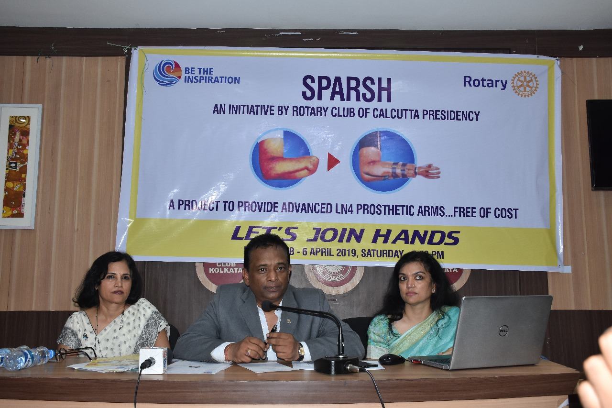
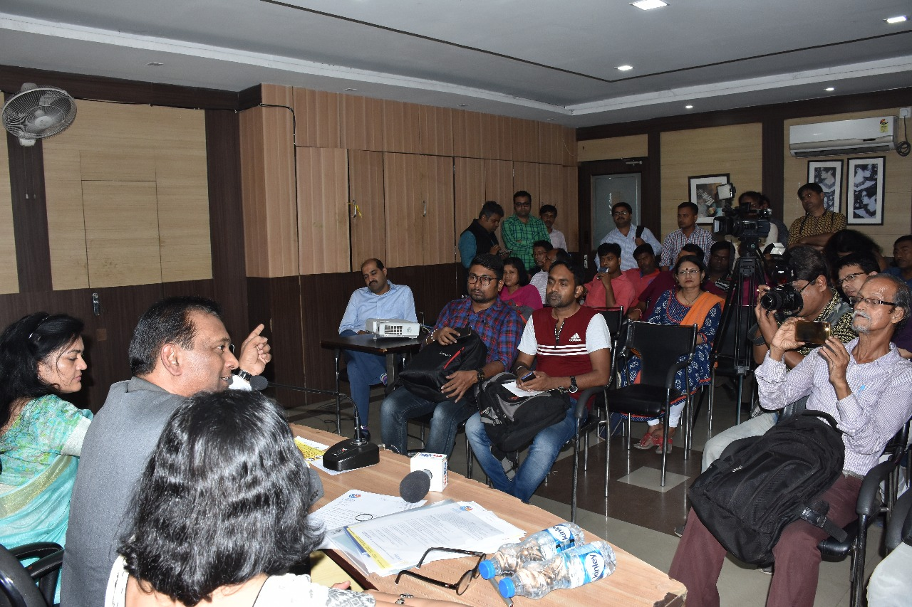
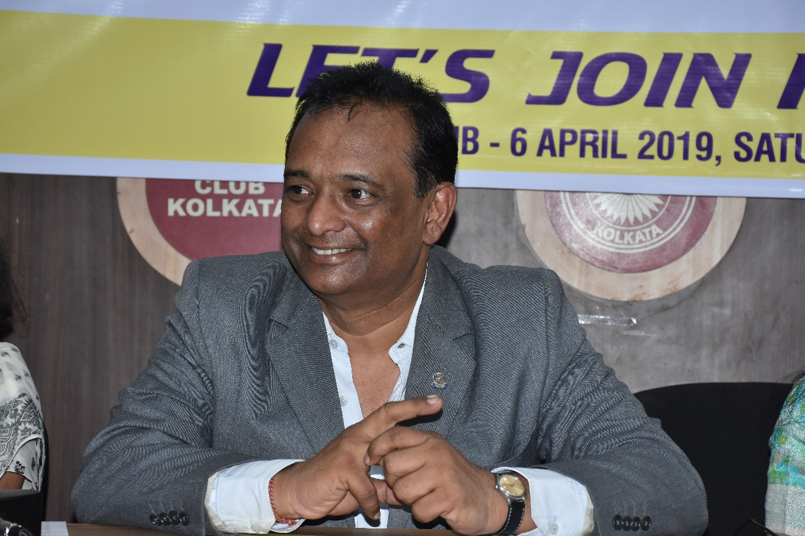
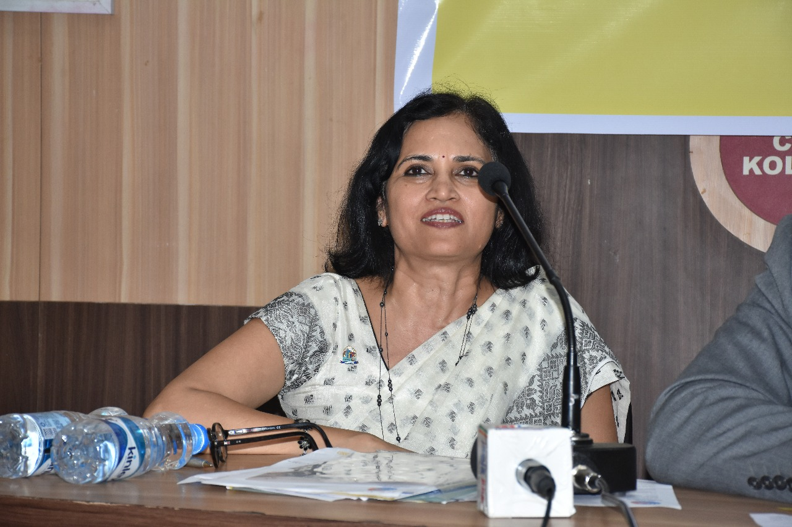

Posted at Date: April 07, 2018
Posted by : মহুয়া চক্রবর্তী
রোটারি ক্লাব অফ ক্যালকাটা প্রেসিডেন্সি নিয়ে এল প্রথম
বিশেষ ক্ষমতাসম্পন্ন কৃত্রিম হাত এলএন৪
রোটারি ক্লাব অফ ক্যালকাটা প্রেসিডেন্সির পক্ষ থেকে বিনামূল্যে ৪০০জন সহায় সম্বলহীন মানুষদের দেওয়া হবে বিশেষ ক্ষমতাসম্পন্ন এলএন৪ কৃত্রিম হাত। এই নয়া উদ্যোগের নাম 'প্রজেক্ট স্পর্শ'। শনিবার কলকাতার প্রেসক্লাবে রোটারি ক্লাব অফ ক্যালকাটা প্রেসিডেন্সির আয়োজিত সাংবাদিক সম্মেলনে উপস্থিত ছিলেন প্রেসিডেন্ট আরটিএন সিএ শ্রী রঞ্জন মুসদ্দি, সেক্রেটারি আরটিএন শ্রীমতি সঙ্গীতা জৈন, ডিরেক্টর চিকিৎসক রিনা মালপানি, অরুন সানচেতি , প্রদীপ জৈন, প্রিয়াঙ্কা গুপ্ত, শাশ্বতী মুখার্জী সহ অন্যান্য সদস্যরা। হাত ,আমাদের শরীরের এক গুরুত্বপূর্ণ অঙ্গ। কোন দুর্ঘটনা কিংবা কোন বিরল রোগের কারণে এটি যখন বাদ পড়ে তখন থমকে যায় জীবনের গতিপথ। তাই এবার এই সমস্যার সমাধানে এই প্রথম রাজ্যে এসে গেল এলএন৪ কৃত্রিম হাত। আমেরিকার প্রযুক্তি সম্পন্ন এই এলএন৪-এর মাধ্যমে অনায়াসে চালিত হবে হাতের সবকটি আঙ্গুল। যার ফলে কারোর সাহায্য ছাড়াই দৈনন্দিন কিংবা পেশাগত যেকোন কাজ অতি সহজেই করা যাবে। শিশু থেকে বয়স্ক ব্যক্তি সবাই এই মেন্টেন্স ফ্রি বিশেষ ক্ষমতাসম্পন্ন কৃত্রিম হাত ব্যবহার করতে পারবেন। তবে তাদের কনুইয়ের নীচে অন্তত ৪ ইঞ্চি অর্থাৎ ১০ সেন্টিমিটার বাহু থাকা আবশ্যক।

এদিন এই অনুষ্ঠান সম্পর্কে প্রেসিডেন্ট আরটিএন সিএ শ্রী রঞ্জন মুসদ্দি জানান, আমরা ইতিমধ্যে ভারতের বিভিন্নপ্রান্তে প্রায় ১৫০০০মানুষকে বিনামূল্যে এই এলএন৪ কৃত্রিম হাত দিতে পেরেছি। সবাই এই হাত পেয়ে খুবই খুশি। ভালো লাগছে যে এই নতুন হাতের সাহায্যে তারা সমস্ত প্রতিকূলতা জয় করে এগিয়ে যাচ্ছেন।

আপনাদের জানিয়ে রাখি এই বিশেষ ক্ষমতাসম্পন্ন এলএন৪-এর প্রতি হাতের আনুমানিক মূল্য ৩০০০০টাকা। যা রোটারি ক্লাব অফ ক্যালকাটা প্রেসিডেন্সির পক্ষ থেকে দেওয়া হচ্ছে সম্পূর্ণ বিনামূল্যে। আর কিছুদিনের মধ্যে চক্রবেড়িয়ায় হবে এই নয়া উদ্যোগের প্রথম ক্যাম্পের সূচনা।

*এ সম্পর্কে আরো বিশদে জানতে ফোন করুন -৯৮৩৬০৫২২৬৬(9836052266)/ ৯৮৩৬২৫২২৬৬(9836252266)/ ৯৮৩৬৯৫২২৬৬(9836952266) ৬২৮৯২২৭৯১৮(6289227918)